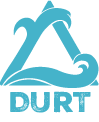

Propulsion System
Custom 3D-Printed Shrouds
Custom 3D-Printed Shrouds
The Hardware: ROV [Name]
Built for the 2026 NURC mission, our latest ROV features a modular chassis and high-torque thrusters optimized for deep-water stability.

Depth. Precision. Culture.
Built for the 2026 NURC mission, our latest ROV features a modular chassis and high-torque thrusters optimized for deep-water stability.

We leverage Python and C++ to handle real-time sensor fusion. Our vision system allows for autonomous gate navigation and precise claw manipulation.
Team founded at Dobson High.
Won "Judges Award" at NURC debut.
Conitnueing our mission.